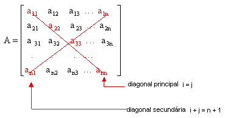

Matriz de ordem 3
Dada a matriz de ordem 3, B = o valor numérico do seu determinante é calculado da seguinte forma:
o valor numérico do seu determinante é calculado da seguinte forma:
Primeiro representamos essa matriz em forma de determinante e repetimos as duas primeiras colunas.

Depois calculamos os produtos das diagonais principais e os produtos das diagonais secundárias.

Deve-se pegar o oposto dos produtos das diagonais secundárias e somar com os produtos das diagonais principais.
Det B = – (0 + 40 + 0) –15 + 0 – 4 = – 40 – 19 = – 59
Essa regra utilizada no cálculo do determinante de matriz de ordem 3 é chamada de Regra de Sarrus.

Exemplo de Matriz Diagonal Principal & Secundária
programa
{
funcao inicio()
{
const inteiro n=4
inteiro matriz[n][n]
para(inteiro l=0;l< n;l++){
para(inteiro c=0;c< n;c++){
leia(matriz[l][c])
}
}
para(inteiro l=0;l< n;l++){
para(inteiro c=0;c< n;c++){
se(l==c){
matriz[l][c]=1
}
senao se(c==n-l-1){
matriz[l][c]=2
}senao{
matriz[l][c]=3
}
}
}
para(inteiro l=0;l< n;l++){
para(inteiro c=0;c< n;c++){
escreva(matriz[l][c], " ")
}
escreva("\n")
}
}
}